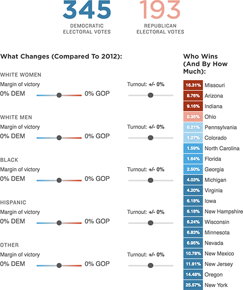

{% extends 'base_template.html' %}

{% block content %}

    {% if COPY.labels.headline %}<h1>{{ COPY.labels.headline|smarty }}</h1>{% endif %}
    {% if COPY.labels.subhed %}<h2>{{ render(COPY.labels.subhed)|smarty }}</h2>{% endif %}

    <div id="graphic" class="graphic">
        
        <div class="container clearfix">
            <div id="table-totals" class="table-totals"></div>
            <div id="table-controls" class="table-controls"></div>
            <div id="table-details" class="table-details"></div>
        </div>
    </div>

    {% if COPY.labels.footnote %}
    <div class="footnotes">
        <h4>Notes</h4>
        <p>{{ COPY.labels.footnote|smarty }}</p>
    </div>
    {% endif %}

    <div class="footer">
        {% if COPY.labels.source %}<p>Source: {{ COPY.labels.source|smarty }}</p>{% endif %}
        {% if COPY.labels.credit %}<p>Credit: {{ COPY.labels.credit|smarty }}</p>{% endif %}
    </div>

{% endblock content %}

{% block extra_foot_js %}
{% raw %}
<script id="margin-table-template" type="text/ractive">
    <div class="margin-table-wrapper">
        <table>
            <tbody>
                {{#each rows}}
                <tr>
                    {{#this}}
                    <td class="{{winnerClass}} {{marginClass}}" data-tooltip="{{margin}}%">
                    {{margin}}%
                    </td>
                    {{/this}}
                    <th>{{@key}}</th>
                </tr>
                {{/each}}
            </tbody>
        </table>
    </div>
</script>
<script id="results-template" type="text/ractive">
    <div class="dem">
        {{#electoralVotes}}
            <p><span class="dem-votes {{#if this.dem > 270}}winner{{/if}}">{{dem}}</span></p>
        {{/electoralVotes}}
        <p class="votes">Democratic<br />Party Votes</p>
    </div>
    <div class="gop">
        {{#electoralVotes}}
            <p><span class="gop-votes {{#if this.gop > 270}}winner{{/if}}">{{gop}}</span></p>
        {{/electoralVotes}}
        <p class="votes">Grand Old<br />Party Votes</p>
    </div>
</script>
<script id="controls-template" type="text/ractive">
    <div class='table-controls-wrapper {{#unless interactive}}disabled{{/unless}} {{#if mobile}}mobile{{/if}}'>
        {{#each adjustments}}
            <h4>{{label}}</h4>
            <div class="control-group {{@key}}-pct-group">
                <span class="control-label">Margin<span class="label-concat">: </span></span>
                <div class="control-label-mobile">
                    {{#if this.pct == 0}}
                        <span class="control-label-mobile">+/- 0%</span>
                    {{elseif this.pct > 0}}
                        <span class="gop-slider-label {{#if this.pct > 0}}gop-margin-winner{{/if}}">{{#if pct === 0.0}}{{elseif pct > 0}}+{{else}}-{{/if}}{{(Math.abs(pct * 100)).toFixed(0)}}% GOP</span>
                    {{else}}
                        <span class="dem-slider-label {{#if this.pct < 0}}dem-margin-winner{{/if}}">{{#if pct === 0.0}}{{elseif pct < 0}}+{{else}}-{{/if}}{{(Math.abs(pct * 100)).toFixed(0)}}% DEM</span>
                    {{/if}}
                </div>
                <div class="slider-label label-dem">
                    <span class="dem-slider-label {{#if this.pct < 0}}dem-margin-winner{{/if}}">{{#if pct === 0.0}}{{elseif pct < 0}}+{{else}}-{{/if}}{{(Math.abs(pct * 100)).toFixed(0)}}% DEM</span>
                </div>
                <div class="range-slider">
                    <input id="{{@key}}-pct" type="range" step="0.01" value="{{this.pct}}" min="-0.10" max="0.10">
                </div>
                <div class="slider-label label-gop">
                    <span class="gop-slider-label {{#if this.pct > 0}}gop-margin-winner{{/if}}">{{#if pct === 0.0}}{{elseif pct > 0}}+{{else}}-{{/if}}{{(Math.abs(pct * 100)).toFixed(0)}}% GOP</span>
                </div>
            </div>
            <div class="control-group {{@key}}-turnout-group">
                <span class="control-label turnout">Turnout: <strong>{{#if turnout > 0}}+{{/if}}{{(turnout * 100).toFixed(0)}}%</strong></span>
                <input id="{{@key}}-turnout" type="range" step="0.01" value="{{this.turnout}}" min="-0.10" max="0.10">
                <!--<span>{{#if turnout > 0}}+{{/if}}{{(turnout * 100).toFixed(0)}}%</span>-->
        {{/each}}
    </div>
</script>
{% endraw %}
{% endblock extra_foot_js%}
